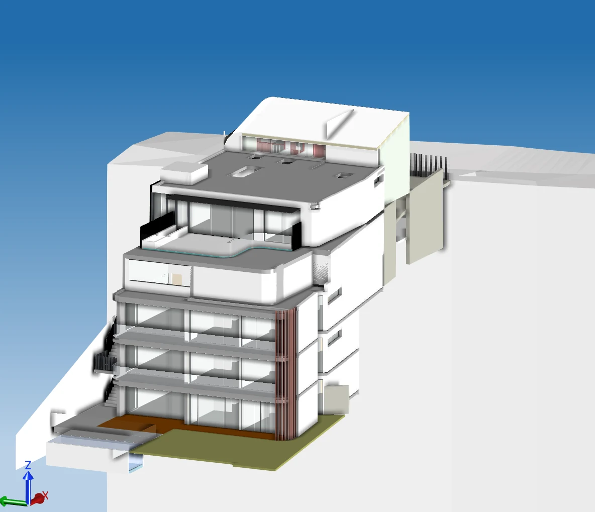

Junior Structural /
Façade Engineer
Assisting with structural and façade assessments, glazing and aluminium checks, shop-drawing reviews, weatherproofing, site inspections, water testing and reporting.
DANIEL SLEIMAN · ENGINEERING PORTFOLIO
Understanding the detail.
Seeing the whole building.
I’m Daniel, a final-year Civil Engineering (Honours) student at UTS, with approximately 2.5 years in structural and façade consultancy.
From reviewing a glazing detail to seeing how it is installed, my experience connects engineering intent with construction reality. I have assisted with assessments, drawing reviews, inspections, water testing and technical reporting.
Read my CV ↗
Follow the drawing. Explore the interfaces.
See the questions
behind the façade.
Selected architectural material from projects I have assisted with. Hotspots explain review considerations; they do not represent certified designs or claim responsibility for every element shown.
One building. Interacting systems.
Select a lens to see what
comes into focus.

SUPPLIED MODEL VIEW / CONCEPTUAL OVERLAYSThe form, openings and terraces establish the context. Engineering review connects these architectural decisions to support, weathering and construction.
My consultancy exposure spans the drawing,
the review and the
work on site.
Read the architectural and structural information together. Identify interfaces, drawing discrepancies and the information needed to progress a review.
Assisting with structural and façade assessments, glazing and aluminium checks, shop-drawing reviews, weatherproofing, site inspections, water testing and reporting.
Catalyst Construction
Drawing interpretation, site coordination, sequencing and workmanship. Practical exposure that shapes the questions I bring back to a drawing.
Woolworths Parramatta
Team supervision, training and daily priorities. Learning to communicate clearly when conditions change.
OPEN TO GRADUATE ENGINEERING OPPORTUNITIES · SYDNEY
Structural and façade engineering.
Technical thinking, grounded
in construction.